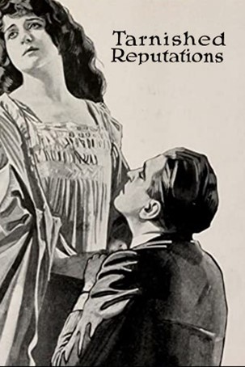
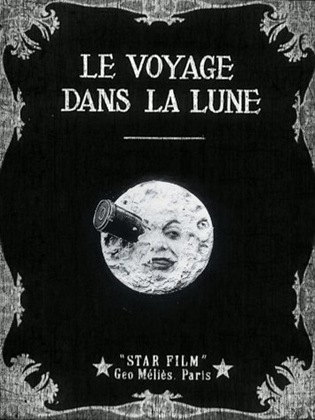
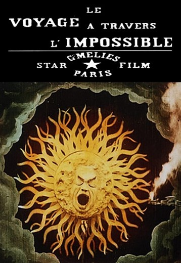
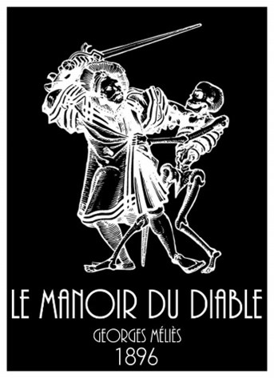

Com o passar dos anos por volta de 1877 surgiu outro equipamento chamado praxinoscópio podemos dizer foi uma adaptação da lanterna mágica e derivada de um outro equipamento chamada de zootropo foi criada pelo francês Émile Reynaud. Esta máquina consistia em uma caixa de biscoitos eram colocados lentes imagens com uma pequena variação de um desenho do outro e espelhos para que na hora da projeção em movimento apresentação a sensação de que o desenho estava em movimento. Seu criador chegou a criar um conjunto de películas animadas para uma apresentação de 15 minutos, que chamou sua obra de “Pantomimes Lumineuses”) foi exibida dentro de seu teatro Óptico no Museu Grévin em Paris. Pouco tempo depois ele conseguiu criar uma versão melhorada de seu aparelho “Théâtre optique” que agora conseguiria obter fundo estático e outra de movimentação, poderiam ser coloridas e até com trilhas sonoras.
Assista o vídeo abaixo para ter uma pequena experiência de como era assistir antigamente com essas máquinas.
Em 1891 foi criado um instrumento que começará a enxergar como gravações de filmes o cinetoscópio é um instrumento de projeção de interna de filmes por Willian Kennedy Laurie Dickson, chefe engenheiro da nada mais conhecida na época Edison Laboratories, somente foi possível a utilização deste equipamento pois Thomas Edson criou uma película de celuloide que era capaz de guardar imagens e projetá-las através de lentes. O seu lançamento para vendas foi em 1894. Para poder assistir precisaria inserir uma moeda no equipamento para que se começa a reproduzir um filme de curta duração em um visor individual. A primeira de obra do cinetoscópio se chamava “Black Maria”, que é considerada o primeiro filme existente. Com todos isso poderia ser descrito também como se fosse o primeiro estúdio de cinema. Pelo fato de Thomas Edson não patentear o cinetoscópio surgiu na época oportunidade de outros inventores e engenheiros a aperfeiçoar este equipamento.
Em 1891 foi criado um instrumento que começará a enxergar como gravações de filmes o cinetoscópio é um instrumento de projeção de interna de filmes por Willian Kennedy Laurie Dickson, chefe engenheiro da nada mais conhecida na época Edison Laboratories, somente foi possível a utilização deste equipamento pois Thomas Edson criou uma película de celuloide que era capaz de guardar imagens e projetá-las através de lentes. O seu lançamento para vendas foi em 1894. Para poder assistir precisaria inserir uma moeda no equipamento para que se começa a reproduzir um filme de curta duração em um visor individual. A primeira de obra do cinetoscópio se chamava “Black Maria”, que é considerada o primeiro filme existente. Com todos isso poderia ser descrito também como se fosse o primeiro estúdio de cinema. Pelo fato de Thomas Edson não patentear o cinetoscópio surgiu na época oportunidade de outros inventores e engenheiros a aperfeiçoar este equipamento.
A primeira apresentação pública foi em 28 de dezembro de 1895 na primeira sala de cinema do mundo, o L'Eden Théâtre, situado em La Ciotat, no sudeste da França, a curta metragem chamada de La Sortie de l'usine Lumière à Lyon (em tradução livre - deixando a fábrica de luz em lyon – classificado como documentário), além dessa curta produziram outros como:
De La Sortie de l'usine Lumière à Lyon (em tradução livre - deixando a fábrica de luz em lyon – classificado como documentário);
L'Arrivée d'un train en gare de La Ciotat (em tradução livre - Chegada de um trem na estação La Ciotat – classificado como documentário);
L'Arroseur arrosé (em tradução livre – O regador regado – classificado como comédia);
Le Repas de bébé (tradução livre – refeição do bebê – classificado como documentário)
Os irmãos Lumière são considerados como inventores da Sétima Arte junto com Georges Méliès conhecido como o pai da ficção, daqui a pouco comentaremos mais de Georges Méliès.
• Um fato interessante, em 8 de julho de 1896 foi a primeira sessão de cinema foi realizada no brasil, aconteceu na Rua Ouvidor no Rio de janeiro, traziam filmagens de cidades europeias. As primeiras filmagens feitas no brasil foram pelos Vittorio di Maio, Afonso Segreto e José Roberto Cunha Salles. Considera-se o primeiro filme gravado no Brasil foi “Chegada do trem em Petrópolis” em 1897, mas possuí questionamentos se essa gravação realmente foi feita no brasil.
• Outro fato interessante é poucas pessoas sabem que no dia 19 de junho é considerada dia do cinema brasileiro, por causa do filme “Uma vista da Baía de Guanabara” de Afonso Segredo, e ele era o responsável para aquisição de filmes para exibição em um cinema do Rio de Janeiro.
Alice foi a primeira pessoa e mulher a explorar a narrativa do cinema e foi também a pioneira em utilizar cores e sons em seus filmes, antes dela chegar em seu ápice na carreira como produtora e cineasta, trabalhava como secretária na empresa de Léon Gaumont chamava Gaumont Film Company para trabalhar na parte cinematográfica, nesta época tanto Thomas Edson e Gaumont estavam procurando formas de aperfeiçoar o cinematógrafo, vale lembrar empresa de Gaumont está em funcionamento até hoje e é a mais antiga da indústria do cinema. Voltando a história um dia Gamount e Alice receberam um convite surpresa dos irmãos Lumière para conhecer uma máquina que seria o cinematógrafo e lá assistiram o La Sortie de l'usine Lumière à Lyon (em tradução livre - Chegada de um trem na estação La Ciotat). Alice ficou encantada com o que tinha visto, ela acreditava que filmagens não poderiam ser vista como algo somente científico, como Gaumont adquiriu um cinematógrafo para seus estudos Alice solicitou a Gaumont permissão em utilizar a câmera em seu tempo livre para realizar maneiras diferentes de gravações para conseguir efeitos diferentes para narrar suas histórias. No ano de 1896 fez sua primeira produção chama-se La Fée aux choux (A Fada do Repolho).
La Fée aux choux (A Fada do Repolho)
Sua outra grande obra foi The Life of Christ em 1906 que contava mais de 300 figurantes.
Alice rodou mais de mil filmes em sua carreira, última produção dela foi em 1920 chama-se Tarnished Reputations (traduzido – Reputações manchadas)

• Ela foi um grande marco para o cinema da época, mas infelizmente pouco se falam de sua história.
George era um ilusionista famoso, na capital da França onde comandava seu próprio teatro foi convidado pelos irmãos Lumière para mostrar primeiro filme do cinematógrafo, ele ficou animado e surpreso pelo que acabou de ter visto para ele algo totalmente revolucionário, então tentou adquirir esta câmera com os irmãos Lumière mas infelizmente os irmãos não o quiseram vender pois era somente para estudos científicos, um tempo depois Geroges conseguiu comprar um cinematógrafo criado por um inglês chamado Robert William Paul, com uma câmera em mãos começou a realizar vários testes, como ângulos de filmagens para que seus truques de ilusionismo ficassem bem trabalhadas . Seus dois trabalhos mais famosos foram:
Le voyage dans la Lune (A Viagem à Lua) em 1902

Voyage à travers l'impossible (Viagem através do impossível) em 1904

Georges é reconhecido como o pai dos efeitos especiais, essas duas grandes obras citadas anteriormente foram inspiradas pelos trabalhos do escritor Júlio Verne, também considerados filmes mais importantes e influentes do cinema de ficção científica. Não podemos esquecer que foi também o pioneiro em criar filmes de terror sua primeira obra chama-se Le Manoir du Diable (A mansão do diabo) em 1896.

Essa transformação foi possível através da obra do americano Edwin Stanton Porter produziu o filme chamado “Great Train Robbery ( O grande roubo do trem) em 1903, é um filme classificado como ação e trouxe uma narrativa realista como um novo padrão, por causa pelo excelente trabalho foi considerado como o primeiro sucesso de bilheteria, através deste filme o cinema começou a se popularizar pois o preço de entrada para assistir era mais barato comparado a peças teatrais ao vivo e na época o cinema como chamamos hoje era conhecido como “nicklelodeons”. Pelo grande interesse da população grandes investidores enxergaram um grande potencial em lucrar começaram a abrir mais estabelecimentos no país.
Neste projeto trataremos sobre a indústria do cinema, desenvolveremos seções que discorrerão sobre a origem, quem foi o responsável pelo pontapé inicial dessa magnífica invenção que com o avanço do tempo tomou um rumo extraordinário, uma indústria que gera bilhões de dólares em receitas.
Em resumo, o site retrata o início de uma grande história, a evolução das telas cinematográficas e aborda sobre os grandes investimentos e faturamentos dessa tecnologia. E, outras páginas de nosso projeto trataremos especificamente dos temas que são dados como os preferidos do público, serão eles: Ação, Comédia, Ficção Cientifica, Terror e Documentários.
Cada um desses gêneros terá uma página que documentará a definição e os principais pontos que fazem com que um filme pertença àquele gênero, nas demais seções estarão presentes filmes em que na opinião dos autores deste projeto se tornaram referências em seus gêneros e que servirão de recomendações aos nossos leitores.